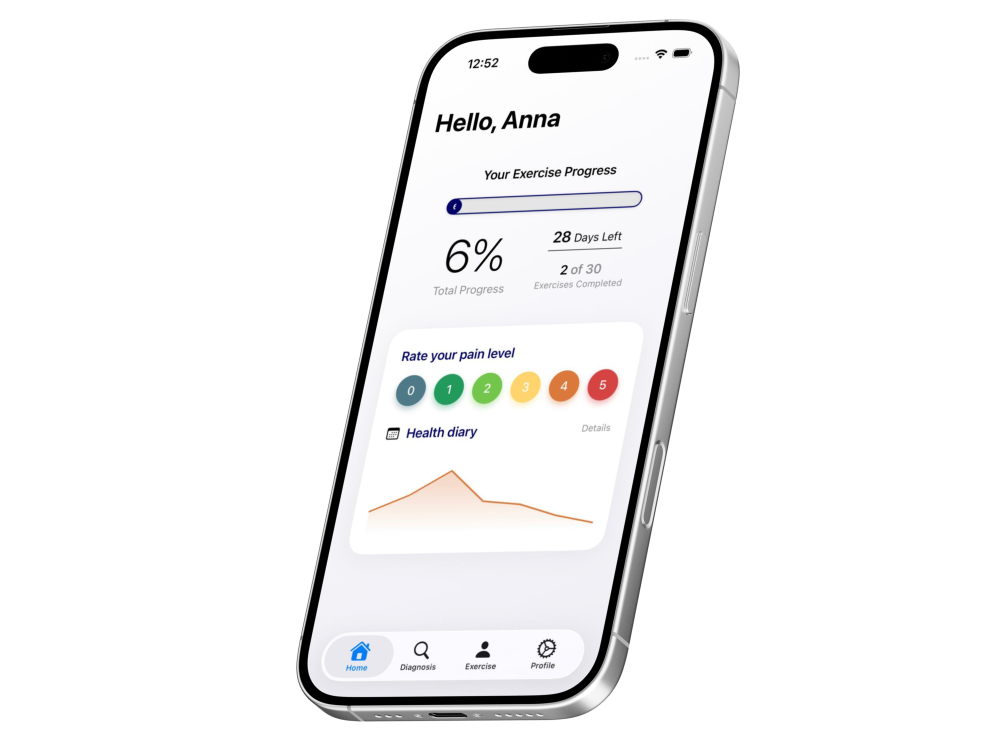
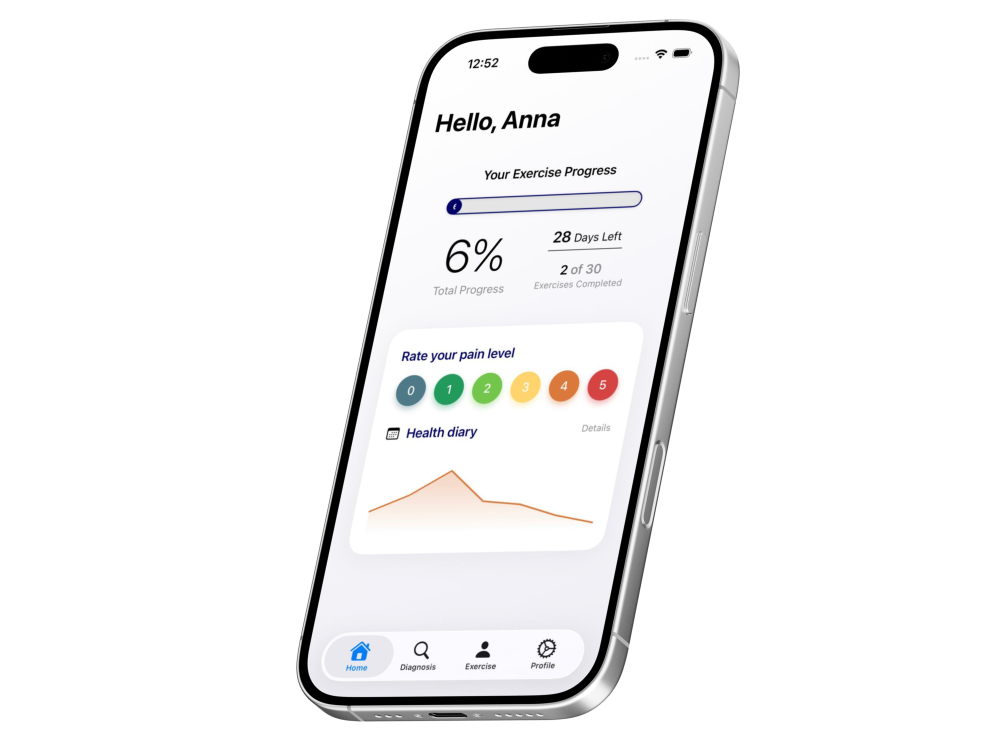
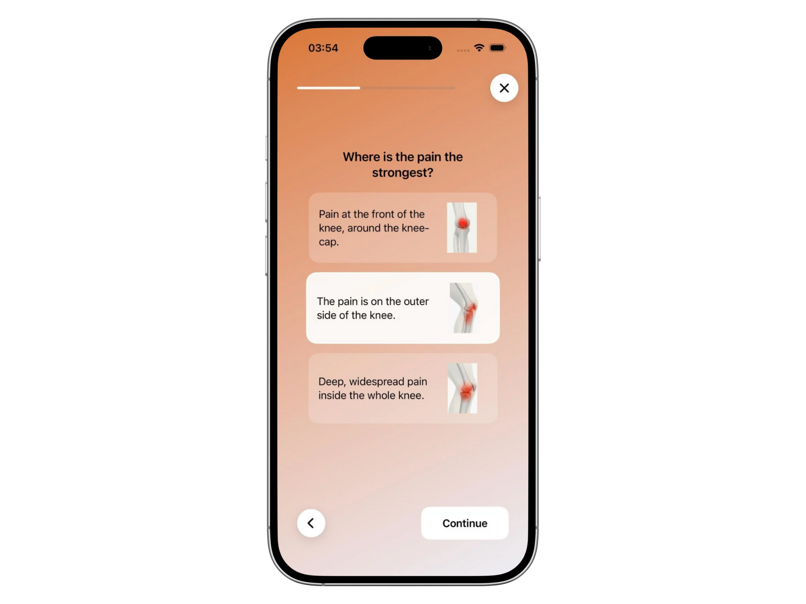

guides you
Guided self-diagnosis
KneeCheck leads you through a structured checklist to assess your knee pain step by step. At the end you receive a clear indication whether home care is reasonable or whether you should seek medical help - and how urgent it is.